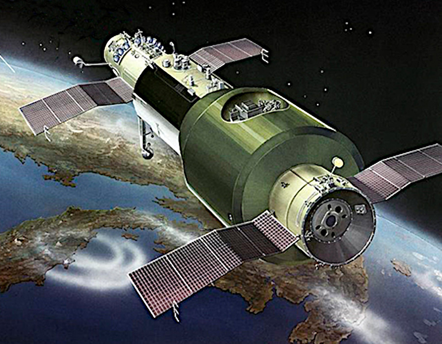
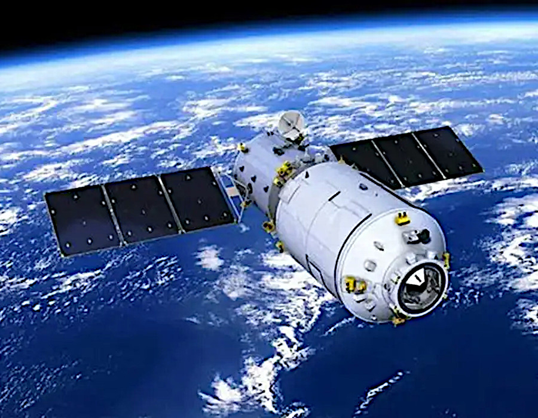
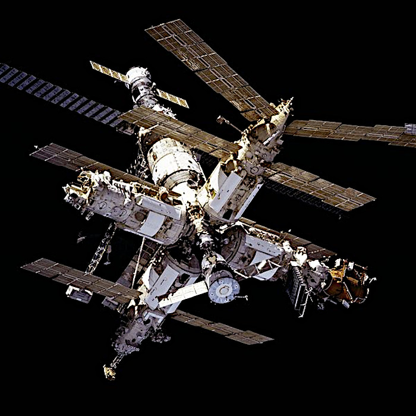
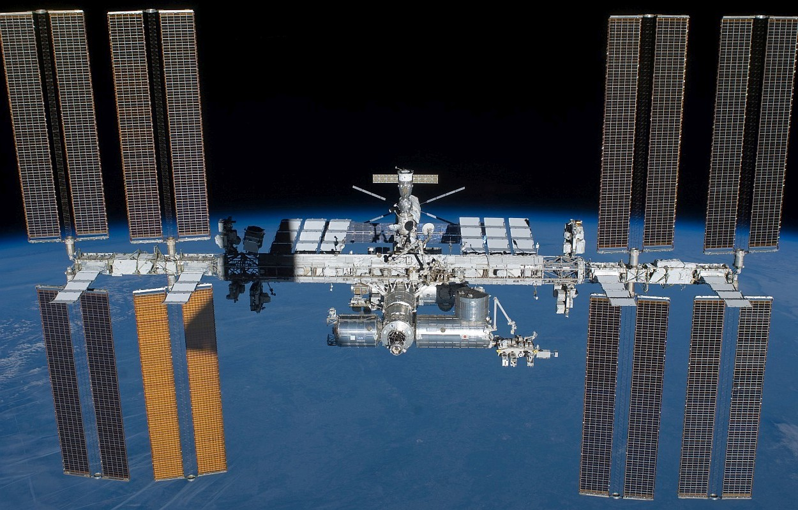
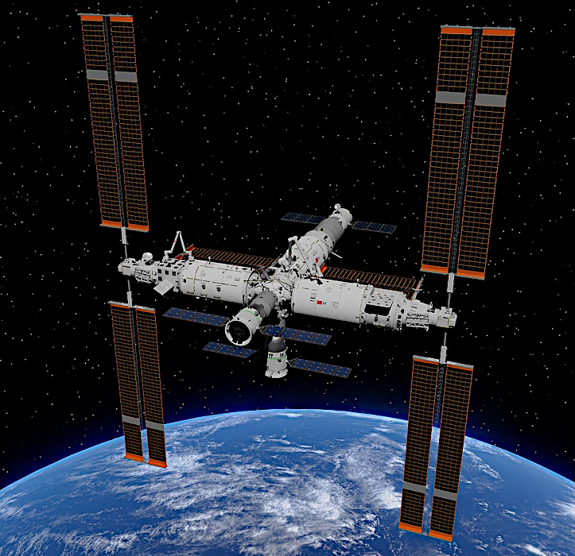

The first step in building a space station is to place the main components into the required orbit. For the earlier, smaller, stations these components were pre-assembled and launched complete (single module stations). Later, larger, stations used modules that were launched separately and assembled in orbit (multi-modular stations).
Personnel were never launched with the station modules. Specialized spacecraft carry personnel to the stations once a pressurised, habitable module was operational. To enable them to remain on the station longer, cargo only spacecraft are used to carry extra supplies to the station.
Early space stations consisted of a single module which was launched, un-occupied, and used on-board engines to attain orbit. The station module itself performed as a spacecraft and used a combination of automation and remote control to place it in the correct orbit.
These stations were pre-assembled on Earth and launched complete in a single mission. The station remained in the required orbital range by regular boosting, using its own engines or those of visiting spacecraft.
The Soviet Salyut stations, U.S. Skylab and Chinese Tiangong-1 ans 2 stations were single module stations. They were all eventually left to de-orbit and be destroyed on re-entry into the atmosphere.

The Salyut programme was the first to launch space station modules into orbit. The programme involved a series of four crewed scientific research stations and two crewed military reconnaissance stations from 1971 to 1986. All stations have been de-orbited and destroyed.
The stations were all based on a similar design with a single pressurised cylindrical module used as a habitat and work area for personnel. There were also one or two docking ports, propulsion systems and solar arrays for power generation.
Each Salyut station was pre-assembled on Earth and launched, complete, on a Soviet Proton K carrier rocket and used their own engines to reach orbit. Experience gained from these stations was used to develop the components and systems used on the later Soviet / Russian Mir station.
Skylab was the first U.S. space station and the only one operated exclusively by the U.S. It was launched in 1973 and de-orbited and destroyed in 1979. The main component was a single large pressurised cylinder used as a habitat for the personnel. It also had an airlock, multiple docking adapter, solar arrays and a large external telescope.
Skylab used a Saturn V rocket's third stage with the propellant tanks removed. It was therefore able to be launched, un-crewed, on a two-stage version of the Saturn V which also placed it into the required orbit.
Experience gained from skylab was later used in the development of the U.S. components of the International Space Station (ISS). The design of the ISS modules, however, was very different to that of Skylab.

China launched its first space station, Tiangong-1, in 2011 and a more advanced station Tiangong-2 in 2016. Another planned larger station, Tiangong-3, was not built. Although these small "space laboratories" were used by visiting crews for science experiments, their main purpose were as test beds for the later, multi-modular, Tiangong Space Station.
Tiangong-1 and 2 were very similar in structure with a large cylindrical pressurised module used as a habitat for personnel to live and work. The modules included an airlock, docking port and an un-pressurised section for propulsion systems and solar array control. Each station was pre-assembled on Earth and launched, complete, on a chinese Long March 2F/G carrier rocket. The stations used their own engines to attain orbit.
These stations contain a number of components which are launched separately and assembled in orbit. The main components include pressurised habitable modules, un-pressurised modules and support structures. Components may use dedicated launchers and their own engines to reach orbit or be transported as cargo in other spacecraft.
The U.S. Space Shuttle is the only craft, so far, capable of transporting large components. Smaller components have been transported using the U.S. SpaceX Dragon cargo spacecraft.
The Soviet/Russian Mir, the International Space Station (ISS) and the Chinese Tiangong are multi-modular stations. Mir has been de-orbited and destroyed, while the ISS and Tiangong stations remain operational.

The Mir space station was the first modular space station and was assembled in orbit from 1986 to 1996. The entire Mir station was de-orbited and destroyed in 2001.
Mir consisted of a pressurised cylindrical "Core Module" with five other pressurised modules attached to it. A specialized docking module was added to one of the modules to accommodate the U.S. Space Shuttle. The co-operation between Russia and the U.S. on Mir facilitated the development of the later International Space Station (ISS).
The six main modules were launched on Soviet / Russian Proton K rockets and all except one used their own engines for rendezvous and docking. The Kvant-1 module used a separate spacecraft for rendezvous and docking.

The International Space Station (ISS) is the largest structure ever built in orbit and the most complex engineering project in the Earth's history. In 1998 the first module was launched into orbit. Since then over fifty main components have been added to the station; including eighteen pressurised, habitable modules.
Large solar arrays and radiators have been added with a framework of structural trusses to support them. These trusses also support equipment, science research facilities and a mobile platform for the station's large robotic arm.
The larger main components have either been launched on Russian Proton or Soyuz carrier rockets or carried by the U.S. Space Shuttle. Other components have been transported by cargo spacecraft.

The multi-modular Tiangong Space Station was designed with the experience gained from the earlier single module Tiangong-1 and 2 stations.
Tiangong has a single core module with two laboratory modules docked perpendicular to it on each side. All three modules are pressurised and habitable. The core module has two axial and one zenith docking ports to accommodate crewed or cargo spacecraft.
The three main modules were launched separately on chinese Long March 5B carrier rockets. Each laboratory module was firstly docked axially to the front of the core module. They were then moved to the side using built in robot arms.
The table below lists all the main habitable components for each station.
Text in the table body hi-lighted in gold links to another rdata space article page and in white links to an external site. These links open in a new tab. Table head remains visible during scrolling.
| Stations | Component Name | Component Type | Launcher | Country | Date Range | Notes |
| Salyut | Salyut-1 | Single module station | Proton-K | U.S.S.R. | 1971-1971 | World's first space station. |
| Salyut-2 | 1973 | First military station. Failed after launch. No crews. | ||||
| Salyut-3 | 1974-75 | Second military station. | ||||
| Salyut-4 | 1974-76 | Forth military station. Third failed. | ||||
| Salyut-5 | 1976-77 | Last military station. | ||||
| Salyut-6 | 1977-81 | First fully operational civilian scientific only station. | ||||
| Salyut-7 | 1982-86 | Fourth civilian station to orbit. Last Salyut station. | ||||
| Skylab | Single module station | Saturn V | U.S. | 1973-79 | First and only exclusive U.S. station. | |
| Mir | Core Module | Pressurised Module | Proton-K | U.S.S.R. | 1986-2001 | Mir base block, main living quarters. |
| Kvant-1 | 1987-2001 | Astrophysics module. | ||||
| Kvant-2 | 1989-2001 | Augmentation module. | ||||
| Kristall | 1990-2001 | Technology module. | ||||
| Spektr | Russia | 1995-2001 | Power module. | |||
| Docking Module | Space Shuttle | U.S. | Simplified Space Shuttle docking to Mir. | |||
| Priroda | Proton-K | Russia | 1996-2001 | Earth Sensing module. | ||
| ISS | Zarya | Pressurised module | Proton-K | Russia | 1998-now | Functional Cargo Block [FGB] for storage. |
| Unity | Space Shuttle | U.S. | Connecting Node 1. for up to six pressurized modules. | |||
| Zvezda | Proton-K | Russia | 2000-now | Service Module [SM] living quarters. | ||
| Destiny | Space Shuttle | U.S. | 2001-now | Laboratory module. Supports the Main Truss. | ||
| Quest | Pressurised / Airlock module | Joint Airlock module for astronauts and cosmonauts. | ||||
| Pirs | Soyuz U | Russia | 2001-21 | Docking Compartment-1 [DC1]. Replaced by Nauka Laboratory module. | ||
| Harmony | Pressurised module | Space Shuttle | U.S. | 2007-now | Connecting Node 2. for up to six pressurized modules. | |
| Columbus | Europe | 2008-now | ESA Laboratory module. | |||
| Kibo ELM-PS | Japan | Japanese Experiment Module Pressurized Section. | ||||
| Kibo PM | Japanese Experiment Module Pressurized Module. | |||||
| Poisk | Pressurised / Airlock module | Soyuz U | Russia | 2009-now | Mini-Research Module 2 [MRM-2]. | |
| Tranquility | Pressurised module | Space Shuttle | U.S. | 2010-now | Connecting Node 3. for up to six pressurized modules. | |
| Rassvet | Pressurised / Airlock module | Russia | Mini-Research Module 1 [MRM-1]. | |||
| PMM | Pressurised module | U.S. | 2011-now | Permanent Multi Purpose Module. Modified MPLM Leonardo-8. | ||
| BEAM | Dragon / Falcon 9 | 2016-now | Bigelow Expandable Activity Module. Inflatable habitat. | |||
| Bishop Airlock | Pressurised / Airlock module | 2020-now | Airlock for deploying small satellites and experiments. | |||
| Nauka | Pressurised module | Proton-M | Russia | 2021-now | Multipurpose Laboratory module. | |
| Prichal | Pressurised / Airlock module | Soyuz 2.1b | Nodal module for connecting modules and docking spacecraft. | |||
| Tiangong | Tiangong-1 | Single module station | Long March 2F/G | China | 2011-18 | Laboratory and station test bed. |
| Tiangong-2 | 2016-19 | |||||
| Tianhe | Pressurised module | Long March 5B | 2021-now | Core module, living quarters and station control. | ||
| Wentian | 2022-now | Laboratory module for research. | ||||
| Mengtian | ||||||
{kind=link}
{kind=link}
{kind=link}
{kind=link}
{kind=link}
{kind=link}